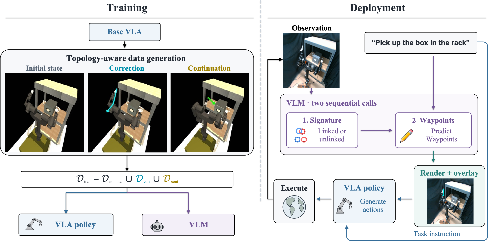

Agentic robot systems often separate high-level reasoning from low-level visuomotor control, motivating intermediate representations that communicate task-relevant constraints between layers. We study this interface in manipulation tasks where partial observations of obstacle geometry can obscure topological relationships that require qualitatively different actions.
We present a topology-guided visual-prompting framework that uses simulation-based planning to augment a nominal demonstration dataset and provides vision-based guidance at deployment. A virtual h-signature based on the Gauss linking integral captures task-relevant topological relationships. In approximate simulation, the signature identifies mismatches and generates targeted correction and task-continuation demonstrations.
At deployment, a vision-language model estimates the current signature and predicts image-space end-effector waypoints. Recomputing both after each VLA action chunk produces a closed-loop hierarchical policy. Across three simulated bimanual tasks and a real-world box-pickup task, our method outperforms a VLA fine-tuned only on nominal demonstrations and a VLM-prompting baseline. On hardware, it improves task success by 40 percentage points over the strongest baseline.
During training, privileged simulator geometry is used to generate signature-correction and task-continuation trajectories. Their projected end-effector paths supervise a VLA and a VLM. At deployment, the VLM predicts the current topological signature and image-space waypoints, which are rendered on the observation as a visual prompt for the VLA. The guidance is updated after every action chunk.

Task success across two VLA backbones. Each setting uses 50 Rope Pulling, 100 Cable Threading, or 100 Box Pickup trials.
| Task | Method | VLA backbone | |
|---|---|---|---|
| π0 | π0.5 | ||
| Rope Pulling | Base Policy | 70 | 52 |
| PEEK | 54 | 50 | |
| Ours | 66 | 64 | |
| Cable Threading | Base Policy | 49 | 47 |
| PEEK | 13 | 20 | |
| Ours | 71 | 77 | |
| Box Pickup | Base Policy | 31 | 45 |
| PEEK | 57 | 66 | |
| Ours | 84 | 82 | |
Rope Pulling
No signature correction
Cable Threading
Correction to hv = 1
Box Pickup
Correction to hv = 0
| Method | Task success | hv-correction success |
|---|---|---|
| Base Policy π0 | 20% | 30% |
| PEEK | 3% | 20% |
| Ours | 60% | 83% |
Thirty real-world trials. All methods use the same real-world adaptation protocol.
@article{wu2026topology,
title = {Topology-Informed Visual Prompting for
Hierarchical Vision-Language-Action Control},
author = {Wu, Haoyang and Kumar, Abhinav and Berenson, Dmitry},
year = {2026},
note = {Preprint}
}